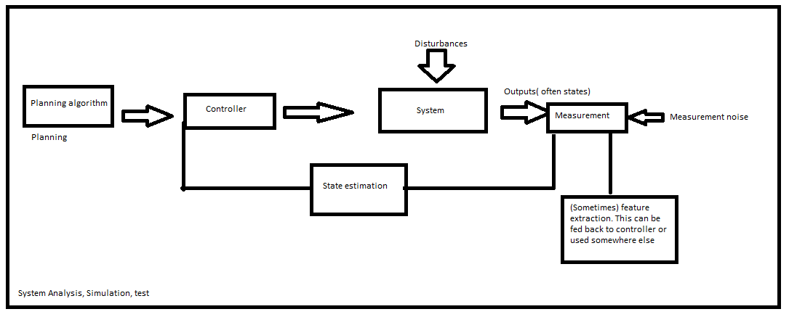

Up
Website Main
Controls
Welcome to my notes on controls. The focus of these notes is intuition and practical usage, so it isn't an ideal resource for learning the entire theory. But, hopefully it's fun!
Quick math background
Complex numbers
Linear Algebra
Optimization
Probability and random things
Controls at 1000 ft and individual Topics list
As an overview, controls is focused on making a system complete a desired task (move, control temperature, balance, etc). In control theory, we model systems which have control inputs, environmental disturbances, and a model:
Controls is focused automating the system! The full process in designing and validating a control loop is described below:
System Identificaion: To control a system, it has to be understood. System modeling can be done by first principles through dynamics, or with data-driven system identification methods. Additionally, the system of interest must be controllable(we can access the steering wheel and gas pedal in the car) and observable(we can see the spedometer and out the front window of the car)! As a side note, some variables are indirectly observable (I.E acceleration can be observed as the derivative of a measured velocity)
Planning: In order for any developed controller to complete a task, it needs to know what task to complete! For example, a controller for a roomba may be able to follow position instructions perfectly, but that is all wasted if it does not know where to go. Two planning algorithms are Trajectory tracking, A* search, RRT*, and APF
-
Controller Design: The controller is the most complex element of the system, taking in a reference from the planning stage. There are many flavors of controller. The most basic controller type is open loop. This flavor of controller takes in a reference and outputs control signals directly to the system. It requires very good system modeling and low disturbances to be effective (and is really not useful). Most useful types use feedback. Feedback is a bit of a double edges sword. We are forced to use it because of how sensitive open-loop controllers are, however, it fundamentally changes our system.
Feedforward(open-loop) only changes the input to the system; it is effectively creating an artificial system operator that can only modify the accessible inputs. Feedback(closed-loop) control changes the future state as a function of the current state. This is a change in dynamics! Poor design can make a system less stable(or unstable), but this does also give us the ability to make unstable systems stable (E.G, a bounded input to a non-inverted pendulum with feedforward will always let the pendulum return to straight down, but a pendulum with a feedback controller could end up with permanent oscillations). Here are some types of feedback controllers:
- Linear Controllers: PID and Full-state feedback assume linear system control (or a linearized system)
- Optimized(linear): LQR optimizes based on the cost of control effort and performance
- Nonlinear Controllers: On-Off, Sliding mode, and gain scheduling controllers assume a non-linear plant
- Robust Controllers: mu synthesis and active disturbance rejection attempt to be robust to errors in model or environmental rejections
- Adaptive: Extremum-seeking and model reference adaptive. These adapt to system dynamics changes over time
- Predictive: MPC uses a model of the system to simulate future states and determine the best inputs
- Intelligent: Reinforcement learning uses data to create a controller
State Estimation: The controller will change the underlying state of the system. In order for this feedback to be known, we have to use sensors(which are noisy). State estimation works to reduce measurement noise and estimate underlying state. We can use filtering techniques like observers, Kalman filters, Particle filters, or simpler approaches like moving averages, FIR, and IIR filters
System Analysis: We need to make sure the designed system works as expected via simulation, analysis, and test. System analysis is based on fundamental concepts like Continuous and discrete time, LTI/LSI, Impulse responses, Convolution, Fourier/Laplace/Z transforms. Common useful checks are stability analysis(Root locus/Nyquist), frequency analysis(Bode), Gain and phase margins. We can also simulate the system in Simulink/Matlab
Signal Processing/Feature Extraction: Signal processing techniques are useful for extracting features/information from complex signals like audio and video. Anything in the Deep Learning section is relevant, along with Fourier, STFT, IIR, FIR, NMF, DTW, LMS. Specific to radios are concepts like Coding/Decoding, Modulation/Demodulation, Channel estimation, Fading, Multi-antenna, Multiple access.
Putting this all together we get the following high level view:

Links to the listed topics are down below:
Continuous and Discrete Time
Impulse functions and Response
LTI and LSI
Convolution
Frequency Response
Fourier Transform
Bode Plots
Gain and Phase Margin
Laplace Transform
Z Transform
Continuous Time Stability analysis
Discrete Time Stability analysis
Lead/Lag Compensation
Practical PID
Digital Control
FIR
IIR
LMS
Kalman Filter
Particle Filter
A*
NMF
DTW
STFT
State Space
LQR
Robust Control(mu synthesis and active disturbance rejection)
MPC
System Identification
Reinforcement Learning